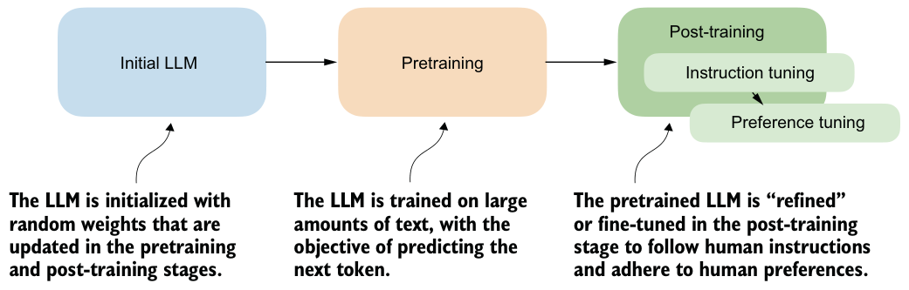
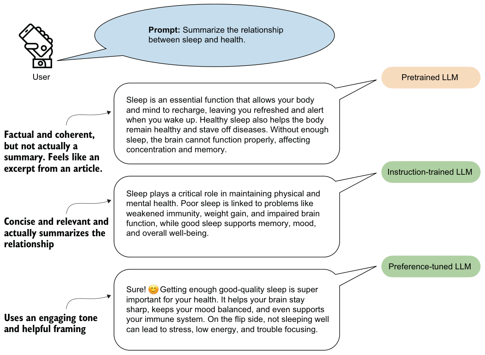

1.2Understanding the standard LLM training pipeline
Let’s briefly look at how conventional (nonreasoning) LLMs are typically trained so that we can understand where their limitations lie. This background will also help frame our upcoming discussions on the differences between pattern matching and logical reasoning.
Before applying any specific reasoning methodology, conventional LLM training is usually structured into two stages: pretraining and post-training, which are illustrated in figure 1.3. Some recent papers also distinguish a mid-training stage between the other two, such as to continue training a model on code, math, or long-context data, but I’ll group that stage under pretraining to keep the terminology simple in this book.

In the pretraining stage of a typical LLM training pipeline, LLMs are trained on massive amounts of unlabeled text, often many terabytes of data or trillions of tokens, including books, websites, research articles, and many other sources. The pretraining objective for the LLM is to learn to predict the next word (that is, the next token) in these texts.
Words and tokens
LLMs become highly capable when they’re pretrained on massive datasets, which typically involve several terabytes of text (equivalent to trillions of tokens). This training requires thousands of GPUs running for many months and can cost millions of dollars. Here, “capable” means that LLMs begin to generate text that closely resembles human writing. To some extent, pretrained LLMs also begin to exhibit so-called emergent properties, which means they can perform tasks that they were not explicitly trained to do, including translation and code generation.
These pretrained models serve as base models for the post-training stage, which uses two key techniques: supervised fine-tuning (often abbreviated as SFT in the literature and also known as instruction tuning) and preference tuning to teach LLMs to respond to user queries.
As shown in figure 1.4, instruction tuning improves an LLM’s capabilities for personal-assistance tasks such as question answering, summarizing, translating text, and more. The preference-tuning stage then refines these capabilities. As the term implies, preference tuning helps tailor responses to user preferences. Some readers may be familiar with the term reinforcement learning with human feedback (RLHF), which is a specific technique for implementing preference tuning.
In short, we can think of pretraining as “raw language prediction” (via next-token prediction) that gives the LLM some basic properties and capabilities to produce coherent texts. The post-training stage then improves the task understanding of LLMs via instruction tuning and refines the LLM to create answers with preferred stylistic choices via preference tuning.
It is worth noting that even an instruction-tuned model is not yet a “chatbot.” A chat interface adds another layer that guides the model’s responses in an interactive, multi-turn setting. This typically involves a system prompt, conversation history management, and other orchestration (an example of this is implemented in appendix G).
